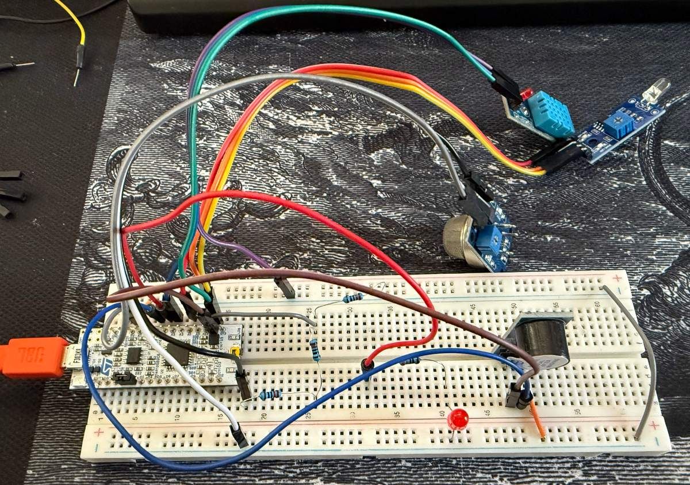

STM32 Fire Detection System
A multi-sensor fire alarm in embedded C on an STM32 Nucleo-F303K8 (ARM Cortex-M4). I brought up the MCU from reset (clock tree and peripheral initialization), wrote a timer-based sensor driver, and built a state machine that fuses smoke, flame, and temperature readings instead of relying on one measurement like a normal smoke alarm. Live telemetry streams over UART.
- Embedded C
- ARM Cortex-M4
- STM32 HAL
- Clock & peripheral init
- ADC
- Timers
- UART
- 3sensors fused
- 40-bithand-written DHT11 driver
- Afinal grade
Project details
What I built
- Brought up the MCU with the STM32 HAL: system clock from the internal 8 MHz HSI oscillator, with the PLL (x4) clocking the ADC, then GPIO, USART2, TIM1, and a 12-bit software-triggered ADC.
- Sensors: MQ-2 smoke sensor on ADC1 channel 1 (PA0), a photodiode for flame/light on ADC1 channel 2 (PA1), and a DHT11 temperature/humidity sensor on a single-wire digital pin (PA4).
- State machine: It has two states, Normal and Fire. The system switches to Fire when any sensor crosses its alarm threshold: a smoke reading above 400, a flame reading below 1000 (both are raw 12-bit ADC readings from 0 to 4095, and the photodiode reading drops when it sees a flame), or a temperature above 40 °C. In Fire, a red LED and buzzer pulse every 250 ms.
- Telemetry: readings and state are sent over USART2 at 38400 baud (8N1) every 2 s to a serial terminal.
DHT11 driver
I wrote my own driver for the DHT11 instead of using a library. It drives PA4 low for 18 ms as a start signal, releases it for 30 µs, then reconfigures the pin as an input with pull-up. Using TIM1 as a microsecond timer, it samples each bit 40 µs after the rising edge, packs 40 bits into 5 bytes, validates the checksum, and returns an error on timeout.
Problems I debugged
- ADC channels interfering: wrote a
Read_ADC_Channel()routine that reconfigures the channel on every read. - 4 V sensor vs 3.3 V ADC: added a 20 kΩ / 10 kΩ voltage divider (4 V → 2.67 V) to keep the smoke sensor's output under the 3.3 V maximum input of the ADC pin (PA0).
- Buzzer stuck on at first flash: found the buzzer was active-low and inverted the GPIO logic.
Testing
I tested each sensor on its own. With a candle in my garage, the flame reading dropped from about 3000 ambient to below 1000, and the temperature rose from about 33 °C to above 40 °C. With an incense stick outside, the smoke reading rose above 400. All three triggered the Fire state.
Code walkthrough
Microsecond delay. The DHT11 sends bits as pulses only tens of microseconds long, which is too short for HAL_Delay() since it counts in milliseconds. I set TIM1 to tick once per microsecond, reset it to 0, and wait until it reaches the delay I need.
void delay_us(uint16_t us) {
__HAL_TIM_SET_COUNTER(&htim1, 0); // reset TIM1 to 0
while (__HAL_TIM_GET_COUNTER(&htim1) < us); // wait until TIM1 reaches us microseconds
}Reading the 40 bits. The loop runs 40 times, once per bit. It waits for the sensor to finish its low pulse, then waits 40 µs. The current byte is shifted left to make room for the new bit, and if the data line is still high at that point, the bit is stored as a 1. After all 40 bits, the first four bytes are added and compared with the fifth byte, the checksum. If they don't match, the reading is thrown out.
for (int i = 0; i < 40; i++) { // sensor sends 40 bits of data
while (HAL_GPIO_ReadPin(GPIOA, GPIO_PIN_4) == GPIO_PIN_RESET);
delay_us(40);
data[i / 8] <<= 1; // shift current byte
if (HAL_GPIO_ReadPin(GPIOA, GPIO_PIN_4) == GPIO_PIN_SET)
data[i / 8] |= 1; // store a 1
while (HAL_GPIO_ReadPin(GPIOA, GPIO_PIN_4) == GPIO_PIN_SET);
}
if ((uint8_t)(data[0] + data[1] + data[2] + data[3]) != data[4])
return 1; // checksum mismatch, reading failed
*humidity = data[0];
*temp = data[2];
return 0;Reading one ADC channel at a time. The smoke sensor and photodiode share ADC1, and at first their readings interfered with each other. This function fixes that by selecting the channel before every read. It configures ADC1 for that channel, starts a conversion, waits for it to finish, then stops the ADC and returns the 12-bit value.
uint16_t Read_ADC_Channel(uint32_t channel) {
ADC_ChannelConfTypeDef sConfig = {0};
sConfig.Channel = channel;
sConfig.Rank = ADC_REGULAR_RANK_1;
sConfig.SingleDiff = ADC_SINGLE_ENDED;
sConfig.SamplingTime = ADC_SAMPLETIME_1CYCLE_5;
HAL_ADC_ConfigChannel(&hadc1, &sConfig); // use the selected channel
HAL_ADC_Start(&hadc1);
HAL_ADC_PollForConversion(&hadc1, HAL_MAX_DELAY); // wait until conversion is finished
uint16_t value = HAL_ADC_GetValue(&hadc1);
HAL_ADC_Stop(&hadc1);
return value;
}
smoke = Read_ADC_Channel(ADC_CHANNEL_1); // PA0
flame = Read_ADC_Channel(ADC_CHANNEL_2); // PA1Deciding the state. If any one sensor crosses its threshold, the system goes to Fire. The LED and buzzer then turn on for 250 ms and off for 250 ms, four times per pass through the loop. The buzzer is active-low, so GPIO_PIN_RESET turns it on and GPIO_PIN_SET turns it off.
#define SMOKE_THRESHOLD 400
#define FLAME_THRESHOLD 1000
#define TEMP_THRESHOLD 40
if ((smoke > SMOKE_THRESHOLD) || (flame < FLAME_THRESHOLD) || (temp > TEMP_THRESHOLD)) {
fireState = 1;
for (int i = 0; i < 4; i++) {
HAL_GPIO_WritePin(GPIOA, GPIO_PIN_5, GPIO_PIN_SET); // LED on
HAL_GPIO_WritePin(GPIOA, GPIO_PIN_6, GPIO_PIN_RESET); // buzzer on (active-low)
HAL_Delay(250);
HAL_GPIO_WritePin(GPIOA, GPIO_PIN_5, GPIO_PIN_RESET); // LED off
HAL_GPIO_WritePin(GPIOA, GPIO_PIN_6, GPIO_PIN_SET); // buzzer off
HAL_Delay(250);
}
} else {
fireState = 0;
HAL_GPIO_WritePin(GPIOA, GPIO_PIN_5, GPIO_PIN_RESET);
HAL_GPIO_WritePin(GPIOA, GPIO_PIN_6, GPIO_PIN_SET);
}